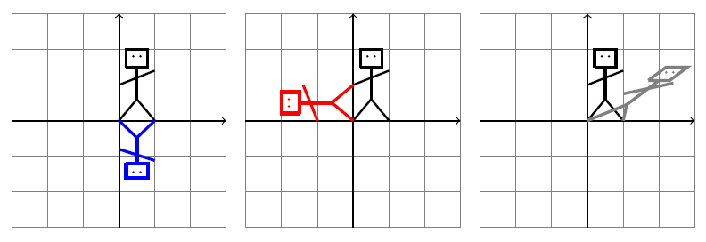

Matice
 Youtube cvičení
Youtube cvičení1 Násobení matic
Vynásobte matice \(\displaystyle A\) a \(\displaystyle B\) pro obě pořadí násobení. \[ A= \begin{pmatrix} 1 & -2 & 3\\ 0 & 1 & 0\\ 1 & 2 & -2 \end{pmatrix},\qquad B= \begin{pmatrix} 2 & -2 & 2\\ -1 & 2 & -1\\ 0 & 1 & 3 \end{pmatrix}. \] Vynásobte matice \(\displaystyle B\) a \(\displaystyle C\) pro obě pořadí násobení, je-li \[ C= \begin{pmatrix} 1 & 0 & 0\\ 0 & 3 & 0\\ 0 & 0 & 4 \end{pmatrix}. \]
V tomto příkladě si vyzkoušíme násobení matic a kromě toho uvidíme, že násobení diagonální maticí je v jistém smyslu jednoduché. Podle toho, v jakém pořadí násobíme matice, se diagonálními prvky se násobí řádky nebo sloupce druhé matice.
Řešení
S rozepsáním pomocí lineárních kombinací vektorů tvořených sloupci matice \(\displaystyle A\) dostáváme \[2\cdot \begin{pmatrix} 1 \\ 0 \\ 1 \end{pmatrix} -1\cdot \begin{pmatrix} -2 \\ 1 \\ 2 \end{pmatrix} +0\cdot \begin{pmatrix} 3\\ 0\\ -2 \end{pmatrix} = \begin{pmatrix} 4\\ -1\\ 0 \end{pmatrix} \] \[-2\cdot \begin{pmatrix} 1 \\ 0 \\ 1 \end{pmatrix} +2\cdot \begin{pmatrix} -2 \\ 1 \\ 2 \end{pmatrix} +1\cdot \begin{pmatrix} 3\\ 0\\ -2 \end{pmatrix} = \begin{pmatrix} -3\\ 2\\ 0 \end{pmatrix} \] \[2\cdot \begin{pmatrix} 1 \\ 0 \\ 1 \end{pmatrix} -1\cdot \begin{pmatrix} -2 \\ 1 \\ 2 \end{pmatrix} +3\cdot \begin{pmatrix} 3\\ 0\\ -2 \end{pmatrix} = \begin{pmatrix} 13\\ -1\\ -6 \end{pmatrix} \] Odsud dostáváme \[ AB= \begin{pmatrix} 4 & -3 & 13 \\ -1 & 2 & -1\\ 0 & 0 & -6 \end{pmatrix} \] Jinou metodou, s podrobným rozepsáním pomocí skalárního součinu řádků první matice a sloupců druhé matice dostáváme \[ \begin{aligned} AB&= \begin{pmatrix} 1 & -2 & 3\\ 0 & 1 & 0\\ 1 & 2 & -2 \end{pmatrix} \begin{pmatrix} 2 & -2 & 2\\ -1 & 2 & -1\\ 0 & 1 & 3 \end{pmatrix} \\&= \begin{pmatrix} 1\times 2-2\times (-1)+3\times 0 & 1\times (-2)-2\times 2+3\times 1 & 1\times 2-2\times (-1)+3\times 3\\ 0\times 2 +1\times (-1) +0\times 0 & 0\times (-2) +1\times 2 +0\times 1 & 0\times 2 +1\times (-1) +0\times 3 \\ 1\times 2 +2\times (-1) -2\times 0 & 1\times (-2) +2\times 2 -2\times 1 & 1\times 2 +2\times (-1) -2\times 3 \end{pmatrix} \\&= \begin{pmatrix} 4 & -3 & 13 \\ -1 & 2 & -1\\ 0 & 0 & -6 \end{pmatrix}. \end{aligned} \] Poté již stručněji (rozepište si sami) \[ BA= \begin{pmatrix} 4 & -2 & 2 \\ -2 & 2 & -1 \\ 3 & 7 & -6 \end{pmatrix}\quad BC= \begin{pmatrix} 2 & -6 & 8 \\ -1 & 6 & -4 \\ 0 & 3 & 12 \end{pmatrix} \quad CB= \begin{pmatrix} 2 & -2 & 2 \\ -3 & 6 & -3 \\ 0 & 4 & 12 \end{pmatrix}. \] V případě součinů s diagonální maticí se diagonálními prvky násobí odpovídající řádky nebo sloupce matice, podle toho, v jakém pořadí součin uvažujeme.
2 Soustava rovnic jako násobení matic
Zapište soustavu rovnic pomocí maticového násobení \[ \begin{aligned} 2x_1-3x_2+2x_3&{}=12\\ 2x_1+\phantom{1}x_2+\phantom{1}x_3&{}=21\\ -x_1+3x_2+\phantom{1}x_3&{}=0\\ \end{aligned} \]
Řešení
\[ \begin{pmatrix} 2 & -3 & 2 \\ 2 & 1 & 1 \\ -1 & 3& 1 \end{pmatrix} \begin{pmatrix} x_1\\x_2\\x_3 \end{pmatrix} = \begin{pmatrix} 12\\21\\0 \end{pmatrix} \]
3 Timmyho transformace

Figurka na obrázku je Timmy ve třech situacích. Jednou se pozoruje svůj obraz ve vodě, jednou spadl na záda, a jednou vrhá stín. Vyjádřete pomocí matice transformaci, která vzor (černá malůvka) převádí na obraz (barevná malůvka).
Poznámka: Stačí si všímat, kam se zobrazují jednotkové vektory ve směru os, tj. kam se zobrazí Timmiho nakročená noha a Timyho ruka, která je natažená dozadu. Případné neceločíselné složky matice jenom odhadněte.
Řešení
Nakročená noha je v bodě \(\displaystyle (1,0)\) a tento bod se transformuje sám na sebe pro krajní obrázky a na bod \(\displaystyle (0,1)\) pro prostřední obrázek. Tím je dán první sloupec matice zobrazení. Ruka natažená dozadu je v bodě \(\displaystyle (0,1)\) a u modrého Timmyho se transformuje (odhadem) na \(\displaystyle (0,-0.8)\), u červeného Timmyho na \(\displaystyle (-1,0)\) a u šedého Timmyho (odhadem) na \(\displaystyle (1,0.8)\). Matice jsou postupně \[ M_{\text{modrá}}= \begin{pmatrix} 1 & 0 \\ 0 &-0.8 \end{pmatrix}, \quad M_{\text{červená}}= \begin{pmatrix} 0 & -1 \\ 1 & 0 \end{pmatrix},\quad M_{\text{šedá}}= \begin{pmatrix} 1 & 1 \\ 0 & 0.8 \end{pmatrix}. \]
4 Matice rotace
Matice rotace o úhel \(\displaystyle \theta\) v kladném smyslu je \[R_\theta= \begin{pmatrix} \cos\theta & -\sin \theta\\ \sin\theta & \cos\theta \end{pmatrix}. \] Násobením ověřte, že matice otočení o úhel \(\displaystyle -\theta\) je k této matici inverzní.
Návod: Funkce kosinus je sudá funkce a funkce sinus je lichá funkce. Proto platí \[\cos(-\theta)=\cos \theta \qquad\text{a}\qquad \sin(-\theta)=-\sin \theta.\]
Matice rotace je důležitá v aplikacích zabývajících se deformacemi, protože umožní odfiltrovat tu část změny polohy referenčních bodů, která je způsobena rotací a nepřispívá tedy ke změně tvaru tělesa.
Řešení
Při zkratce \(\displaystyle S=\sin \theta\) a \(\displaystyle C=\cos\theta\) platí \[ R_{-\theta}=\begin{pmatrix} \cos(-\theta) & -\sin(-\theta) \\ \sin(-\theta) & \cos(-\theta) \end{pmatrix} =\begin{pmatrix} \cos \theta & \sin \theta \\ -\sin\theta & \cos\theta \end{pmatrix} = \begin{pmatrix} C & S\\ -S & C \end{pmatrix} \] a potom \[ R_\theta R_{-\theta}= \begin{pmatrix} C & -S \\ S& C \end{pmatrix} \begin{pmatrix} C & S\\ -S & C \end{pmatrix} = \begin{pmatrix} C^2+S^2 & CS-SC \\ SC-CS & S^2+C^2 \end{pmatrix} = \begin{pmatrix} 1 & 0 \\0& 1 \end{pmatrix}, \] kde jsme využili identitu \[ \sin^2\theta + \cos^2\theta=1. \]
5 Matice posunutí
Transformace pomocí násobení matic zachovává počátek a nemůže proto charakterizovat například posunutí roviny. Pokud chceme mít pomocí maticového násobení realizováno i posunutí, musíme zavést homogenní souřadnice a ztotožnit bod \(\displaystyle (x,y)\) s vektorem \(\displaystyle (x,y,1)^T\). Ukažte, že matice \[P_{a,b}= \begin{pmatrix} 1& 0& a\\ 0 & 1 & b\\ 0& 0& 1 \end{pmatrix} \] je matice posunutí o \(\displaystyle a\) doprava a \(\displaystyle b\) nahoru. Odhadněte, jak bude vypadat matice popisující opačnou transformaci a pro jedno nějaké pořadí součinu ověřte, že součin těchto matic je jednotková matice.
Řešení
Platí \[ \begin{pmatrix} 1& 0& a\\ 0 & 1 & b\\ 0& 0& 1 \end{pmatrix} \begin{pmatrix} x\\y\\1 \end{pmatrix} = \begin{pmatrix} x+a\\y+b\\1 \end{pmatrix} \] a vidíme, že k souřadnici \(\displaystyle x\) se přičítá \(\displaystyle a\) a k souřadnici \(\displaystyle y\) se přičítá \(\displaystyle b\). Inverzní zobrazení bude posunutí o \(\displaystyle a\) doleva a o \(\displaystyle b\) dolů, tj. \[ \begin{pmatrix} 1& 0& -a\\ 0 & 1 & -b\\ 0& 0& 1 \end{pmatrix}. \] Přímým výpočtem vidíme, že platí \[ \begin{pmatrix} 1& 0& a\\ 0 & 1 & b\\ 0& 0& 1 \end{pmatrix} \begin{pmatrix} 1& 0& -a\\ 0 & 1 & -b\\ 0& 0& 1 \end{pmatrix}= \begin{pmatrix} 1& 0& 0\\ 0 & 1 & 0\\ 0& 0& 1 \end{pmatrix}. \]
6 Matice, zachovávající význačné směry
Dřevo má tři výrazné směry a pokud máme možnost zvolit souřadnou soustavu tak, aby tyto směry byly dány vektory \(\displaystyle (1,0,0)^T\), \(\displaystyle (0,1,0)^T\) a \(\displaystyle (0,0,1)^T\), formulace fyzikálních zákonů se zjednoduší. Nyní si ukážeme proč. Najděte
- nejobecnější matici \(\displaystyle 3\times 3\), která zachovává směr vektoru \(\displaystyle (1,0,0)^T\),
- nejobecnější symetrickou matici \(\displaystyle 3\times 3\), která zachovává směr vektoru \(\displaystyle (1,0,0)^T\),
- nejobecnější symetrickou matici \(\displaystyle 3\times 3\), která zachovává směr vektorů \(\displaystyle (1,0,0)^T\), \(\displaystyle (0,1,0)^T\), \(\displaystyle (0,0,1)^T\).
V tomto příkladě uvidíme, že matice zachovávající směr os souřadnic jsou v určitém smyslu pěkné.
Řešení
ad 1. \[ \begin{pmatrix} a & b & c \\ d & e & f \\ g& h& i \end{pmatrix} \begin{pmatrix} 1\\0\\0 \end{pmatrix} = \begin{pmatrix} a \\ d \\g \end{pmatrix} \] a vektory \(\displaystyle (1,0,0)^T\) a \(\displaystyle (a,d,g)^T\) musí mít stejný směr. Proto \(\displaystyle d=g=0\) a nejobecnější matice s danou vlastností je matice, která ve druhém a třetím řádku začíná nulou. \[ \begin{pmatrix} a & b & c \\ 0 & e & f \\ 0& h& i \end{pmatrix} \]
ad 2. Jako minulý případ, ale aby byla matice symetrická, musí být také \(\displaystyle b=c=0\), a \(\displaystyle h=f\) tj. \[ \begin{pmatrix} a & 0 & 0 \\ 0 & e & f \\ 0& f& i \end{pmatrix}. \]
ad 3. Jako minulý případ, ale ještě se musí zachovávat směry vektorů \(\displaystyle (0,1,0)^T\) a \(\displaystyle (0,0,1)^T\). Platí \[ \begin{pmatrix} a & 0 & 0 \\ 0 & e & f \\ 0& f& i \end{pmatrix} \begin{pmatrix} 0 \\1\\0 \end{pmatrix} = \begin{pmatrix} 0 \\ e\\f \end{pmatrix} ,\quad \begin{pmatrix} a & 0 & 0 \\ 0 & e & f \\ 0& f& i \end{pmatrix} \begin{pmatrix} 0 \\0\\1 \end{pmatrix} = \begin{pmatrix} 0 \\ f\\i \end{pmatrix} \] a aby vzor a obraz měly stejný směr, musí být \(\displaystyle f=0\). Nejobecnější symetrická matice, která zachovává směr všech tří základních bázových vektorů je matice, která má mimo hlavní diagonálu nuly.
7 Matice derivování
Ukažte, že matice \(\displaystyle A=\begin{pmatrix} 0 & 0 & 0 \\ 2 & 0 & 0 \\ 0 & 1 & 0\end{pmatrix}\) je matice derivování polynomů stupně nejvýše \(\displaystyle 2\), pokud polynom \(\displaystyle ax^2+bx+c\) ztotožníme s vektorem \(\displaystyle \begin{pmatrix} a \\ b\\c\end{pmatrix}\). Vysvětlete, jak bychom interpretovali matici \(\displaystyle A^2\) a \(\displaystyle A^3\) a tyto matice vypočtěte.
Návod: je možné ukázat buď pro obecný polynom \(\displaystyle ax^2+bx+c\), nebo samostatně pro polynomy \(\displaystyle x^2\), \(\displaystyle x\) a \(\displaystyle 1\) a poté si všimnout, že ostatní polynomy můžeme dostat lineárními kombinacemi a maticová násobení tyto l ineární kombinace nepokazí díky tomu, že je distributivní a komutuje při násobení s konstantou. V tomto příkladě mimo jiné vidíme, že mocnina nenulové matice může být nula. To je efekt, který nemá obdobu u násobení reálných čísel.
Řešení
Polynom \(\displaystyle x^2\) má derivaci \(\displaystyle 2x\), tj. v označení pomocí vektorů se musí vektor \(\displaystyle (1,0,0)^T\) zobrazit na \(\displaystyle (0,2,0)^T\). Toto snadno ukážeme, že platí, protože se vlastně jedná o první sloupec matice \(\displaystyle A\). Podobně, polynom \(\displaystyle x\) má derivaci \(\displaystyle 1\) a polynom \(\displaystyle 1\) má derivaci \(\displaystyle 0\), tj. v označení pomocí vektorů se musí vektory \(\displaystyle (0,1,0)^T\) a \(\displaystyle (0,0,1)^T\) zobrazit na \(\displaystyle (0,0,1)^T\) a \(\displaystyle (0,0,0)^T\). Opět vidíme snadno, že pro naši matici \(\displaystyle A\) platí (dostáváme vlastně druhý a třetí sloupec matice \(\displaystyle A\)).
Protože libovolný polynom druhého stupně dostaneme pomocí lineárních kombinací výše uvedených vektorů a protože tyto lineární kombinace zůstanou při maticovém násobení zachovány, je při výše definovaném zobrazení obrazem libovolného polynomu druhého stupně jeho derivace.
Pro obecný polynom \(\displaystyle ax^2+bx+c\) s derivací \(\displaystyle 2ax+b\) vidíme, že obrazem vektoru \(\displaystyle (a,b,c)^T\) musí být \(\displaystyle (0,2a, b)^T\), což matice \(\displaystyle A\) opět (po krátkém výpočtu) splňuje.
Matice \(\displaystyle A^2\) je druhá derivace a \(\displaystyle A^3\) třetí derivace a mají tvar \[ A^2= \begin{pmatrix} 0 & 0 & 0 \\ 0 & 0 & 0 \\ 2 & 0 & 0 \end{pmatrix}, \qquad A^3= \begin{pmatrix} 0 & 0 & 0 \\ 0 & 0 & 0 \\ 0 & 0 & 0 \end{pmatrix}. \]
8 Matice projekce
Matice \(\displaystyle P=\begin{pmatrix} \cos^2 \alpha & \cos \alpha \sin \alpha \\ \cos\alpha\sin\alpha & \sin^2 \alpha \end{pmatrix}\) reprezentuje kolmou projekci na přímku, která jde počátkem soustavy souřadnic a svírá s kladnou částí osy \(\displaystyle x\) úhel \(\displaystyle \alpha\).
- Ukažte, že platí \(\displaystyle P^2=P\).
- Ukažte, (nemusíte výpočtem, například graficky, nebo využitím toho, že každý bod přímky se zobrazí sám na sebe) že dva různé body se projekcí mohou zobrazit na stejný bod a proto není naděje na to mít inverzní zobrazení. Proto neexistuje inverzní matice.
Řešení
Pro \(\displaystyle C=\cos \alpha\) a \(\displaystyle S=\sin\alpha\) dostáváme \[ \begin{aligned} P^2&= \begin{pmatrix} C^2 & CS \\CS & S^2 \end{pmatrix} \begin{pmatrix} C^2 & CS \\CS & S^2 \end{pmatrix} = \begin{pmatrix} C^4+C^2S^2 & C^3S+CS^3 \\ C^3S+CS^3 & C^2S^2+S^4 \end{pmatrix} \\&= \begin{pmatrix} C^2(C^2+S^2) & CS(C^2+S^2) \\ CS(C^2+S^2) & S^2(C^2+S^2) \end{pmatrix} = \begin{pmatrix} C^2 & CS \\ CS & S^2 \end{pmatrix} =P \end{aligned} \]
Evidentně jakýkoliv bod mimo přímku projekce a jeho obraz jsou dva různé body, které mají stejný obraz. Proto nemůže existovat inverzní zobrazení.
Pro determinant platí \[ |P|= \begin{vmatrix} C^2 & CS \\ CS & S^2 \end{vmatrix} =C^2S^2-(CS)(CS)=C^2S^2-C^2S^2=0 \] a tento výpočet potvrzuje, že neexistuje inverzní matice.